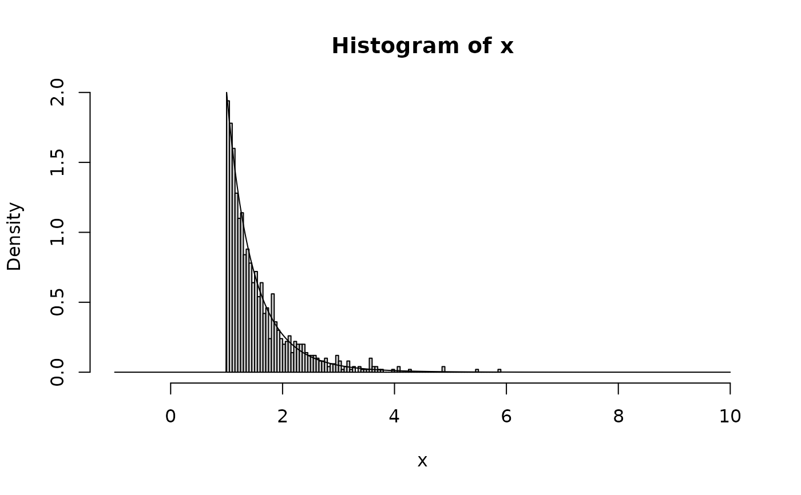
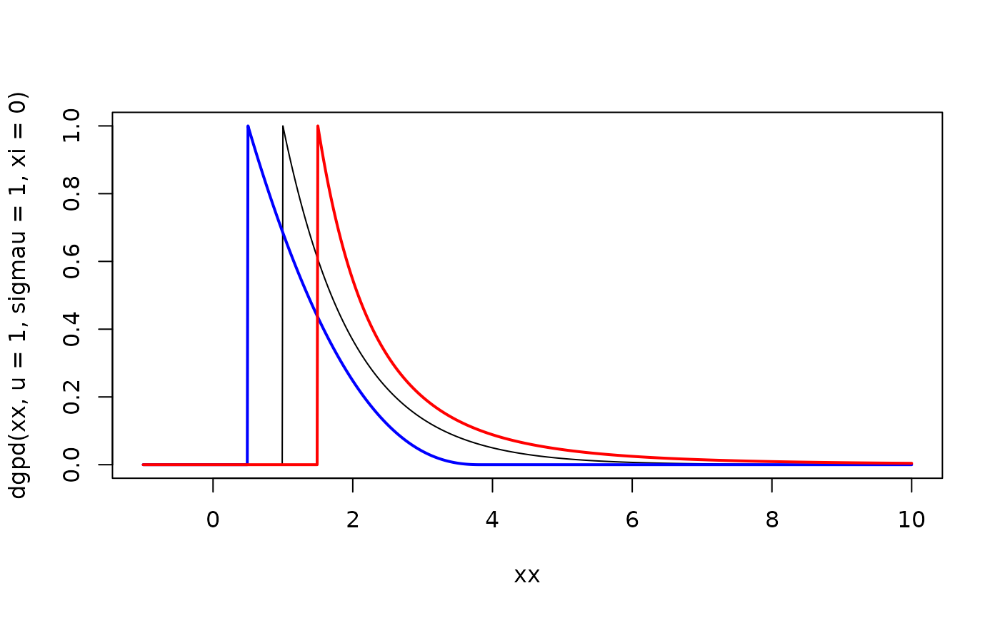
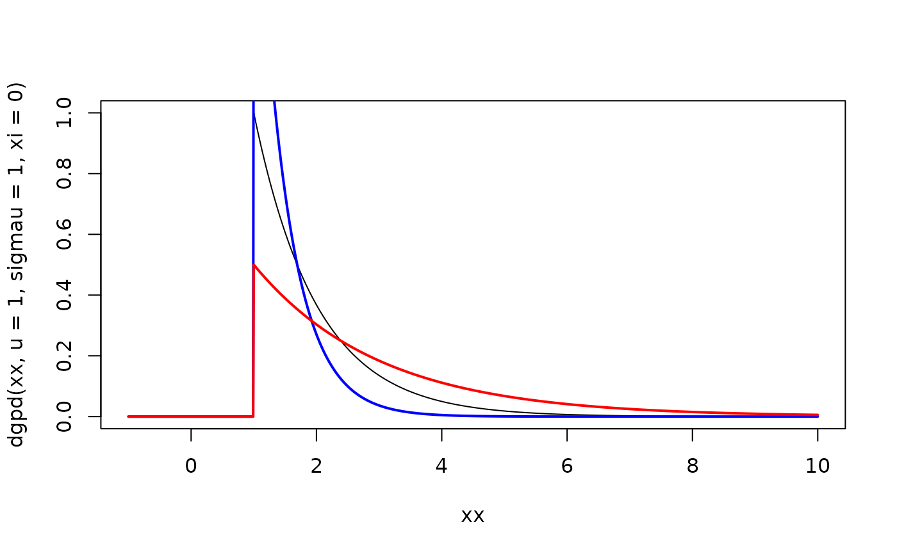

These functions provide information about the generalized Pareto distribution
with threshold u. dgpd gives the density, pgpd gives the distribution
function, qgpd gives the quantile function and rgpd generates random
deviates.
rgpd(n = 1L, u = 0, sigmau = 1, xi = 0)
dgpd(x, u = 0, sigmau = 1, xi = 0, log = FALSE)
pgpd(q, u = 0, sigmau = 1, xi = 0, lower.tail = TRUE, log.p = FALSE)
qgpd(p, u = 0, sigmau = 1, xi = 0, lower.tail = TRUE, log.p = FALSE)integer number of observations.
threshold parameter (minimum value).
scale parameter (must be positive).
shape parameter
vector of quantiles.
logical; if TRUE, probabilities/densities
p are given as log(p).
logical; if TRUE (default), probabilities are
\(P(X \le x)\), otherwise \(P(X > x)\).
vector of probabilities.
rgpd generates random deviates.
dgpd gives the density.
pgpd gives the distribution function.
qgpd gives the quantile function.
If u, sigmau or xi are not specified, they assume the default values of
0, 1 and 0 respectively.
The generalized Pareto distribution has density
$$f(x) = 1 / \sigma_u (1 + \xi z)^(- 1 / \xi - 1)$$
where \(z = (x - u) / \sigma_u\) and \(f(x) = exp(-z)\) if \(\xi\) is 0. The support is \(x \ge u\) for \(\xi \ge 0\) and \(u \le x \le u - \sigma_u / \xi\) for \(\xi < 0\).
The Expected value exists if \(\xi < 1\) and is equal to
$$E(X) = u + \sigma_u / (1 - \xi)$$
k-th moments exist in general for \(k\xi < 1\).
x <- rgpd(1000, u = 1, sigmau = 0.5, xi = 0.1)
xx <- seq(-1, 10, 0.01)
hist(x, breaks = 100, freq = FALSE, xlim = c(-1, 10))
lines(xx, dgpd(xx, u = 1, sigmau = 0.5, xi = 0.1))

plot(xx, dgpd(xx, u = 1, sigmau = 1, xi = 0), type = "l")
lines(xx, dgpd(xx, u = 0.5, sigmau = 1, xi = -0.3), col = "blue", lwd = 2)
lines(xx, dgpd(xx, u = 1.5, sigmau = 1, xi = 0.3), col = "red", lwd = 2)

plot(xx, dgpd(xx, u = 1, sigmau = 1, xi = 0), type = "l")
lines(xx, dgpd(xx, u = 1, sigmau = 0.5, xi = 0), col = "blue", lwd = 2)
lines(xx, dgpd(xx, u = 1, sigmau = 2, xi = 0), col = "red", lwd = 2)
